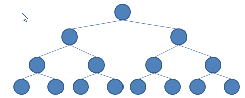

發掘具有組合性的行為
February 12, 2022如果你是初學 Haskell，且能一路看到這篇文章，應該算是步入 Haskell，或說是步入了函數式程式設計的大門了，往後還有更多的東西等著發掘，為此，這邊以〈發掘更具組合性的抽象〉為題，作為這系列文件的結束。
實作 Tree 型態
來試著實作一個 Tree 型態，並提供 fromList 函式可從 list 建立樹、insert 函式可將指定數值插入樹、node 函式可測試某節點是否在樹中、toList 可將樹轉為 list：
ghci> let tree = fromList [1, 2, 3, 4, 5]
ghci> tree
fromList [5,4,3,2,1]
ghci> node 3 tree
True
ghci> insert 6 tree
fromList [6,5,4,3,2,1]
ghci> toList tree
[5,4,3,2,1]
ghci>
你會怎麼實現呢？以下是個簡單的版本：
data Tree a = EmptyTree | Node a (Tree a) (Tree a)
singleNode :: a -> Tree a
singleNode x = Node x EmptyTree EmptyTree
insert :: (Ord a) => a -> Tree a -> Tree a
insert x EmptyTree = singleNode x
insert x (Node a l r)
| x == a = Node x l r
| x < a = Node a (insert x l) r
| x > a = Node a l (insert x r)
fromList :: Ord a => [a] -> Tree a
fromList [] = EmptyTree
fromList (x:xs) = insert x $ fromList xs
node :: (Ord a) => a -> Tree a -> Bool
node x EmptyTree = False
node x (Node a l r)
| x == a = True
| x < a = node x l
| x > a = node x r
toList :: Tree a -> [a]
toList EmptyTree = []
toList tree = con [] tree
where
con lt EmptyTree = lt
con lt (Node a l r) = con (a : (con lt l)) r
instance Show a => Show (Tree a) where
show tree = "fromList " ++ (show . toList) tree
現在將重點放在 toList 的實作，我做了什麼？我從 [] 開始，在呼叫內部的 con 函式過程中，如果到達了左子樹的葉節點，就拆下葉節點放到 list 前端（也就是使用 : 函式），左子樹訪問完就訪問右子樹，每次也是拆下葉節點放到 list 前端。
如果使用動畫來顯示這個過程的話，就可以清楚地看到，就像是在折疊一顆樹：

假設現在有一顆樹，節點值都是整數，想將所有節點值加總該怎麼做呢？可以使用上頭的 toList 將樹轉為 list，然後再使用 sum 求得加總，不過，我們自己來寫一個：
sumTree :: Tree Integer -> Integer
sumTree tree = sumIt 0 tree
where
sumIt init EmptyTree = init
sumIt init (Node a l r) = sumIt (a + (sumIt init l)) r
如何？仔細一看，這跟上頭的 toList 根本就是差不多的東西，只是一個用了 :，而另一個用了 +，如果這些函式是被當成引數傳入的話，那我們可以寫個 foldTree：
foldTree :: (a -> b -> a) -> a -> Tree b -> a
foldTree _ z EmptyTree = z
foldTree f z (Node a l r) = foldTree f (f preZ a) r
where preZ = foldTree f z l
那麼，toList 與 sumTree 就可以分別如下使用 foldTree 實作：
toList :: Tree a -> [a]
toList tree = foldTree (\z a -> a : z) [] tree
sumTree :: Tree Integer -> Integer
sumTree tree = foldTree (+) 0 tree
Foldable 型態類別
foldTree 看起來很像可以處理 list 的 foldl，實際上，如果折疊樹時是從右子樹開始，實作出來的就像是可處理 list 的 foldr 了，看來可以折疊的並不只有 list，對於可折疊的行為，Haskell 在 Data.Foldable 模組定義了 Foldable 型態類別。
在 Data.Foldable 模組也有定義 foldl 等函式，先來看看看它們的型態：
ghci> import qualified Data.Foldable as F
ghci> :t F.foldl
F.foldl :: Foldable t => (b -> a -> b) -> b -> t a -> b
ghci>
相對於只能處理 list 的 foldl :: (a -> b -> a) -> a -> [b] -> a，Data.Foldable 模組中的 foldl 函式，第三個可接受的引數必須具有 Foldable 的行為，最直覺的就是先試試看 list：
ghci> F.foldl (+) 0 [1 .. 10]
55
ghci> F.foldr ((:) . (*10)) [] [1 .. 10]
[10,20,30,40,50,60,70,80,90,100]
ghci>
想要實現 Foldable，可以實作它的 foldr :: (a -> b -> b) -> b -> t a -> b 或 foldMap :: Monoid m => (a -> m) -> t a -> m，對於 list，實作 Foldable 的 foldr，只要令其等於 Data.List 的 foldr 函式就可以了，如果想要讓上頭的 Tree 也成為 Foldable，可以如下實作：
import Prelude hiding (foldr)
import Data.Foldable hiding (toList)
...
instance Foldable Tree where
foldr _ z EmptyTree = z
foldr f z (Node a l r) = foldr f (f a preZ) l
where preZ = foldr f z r
這麼一來，我們自定義的 Tree 也可以直接使用 Data.Foldable 模組的 foldr、foldl 等函式了：
ghci> let tree = fromList [1..10]
ghci> F.foldr (+) 0 tree
55
ghci> F.foldl (+) 0 tree
55
ghci>
Monoid 型態類別
另一個實作 Foldable 的方式，是實作它的 foldMap :: Monoid m => (a -> m) -> t a -> m，不過受到了 Monoid 的限制，這是什麼？你可以先思考一下，如果想要實作一個通用的 foldr 會需要哪些條件？
你能接受的函式必須是二元函式，它要將兩個型態相同的運算元結合，成為一個相同型態的值，例如，list 的 ++，可以將 [1, 2, 3] 與 [4, 5, 6] 結合為 [1, 2, 3, 4, 5, 6]，+ 可以將 2 與 3 結合為 5，* 可以將 2 與 3 結合為 6，而且該二元函式必須具有結合律（Associativity），例如，(1 + 2) + 3 的結果會與 1 + (2 + 3) 相同，因此 + 具有結合律，這是因為事先無法預料可以折疊的資料型態會是什麼樣的結構，被丟進函式處理的兩個值，可能是從結構中任意處取得，如果函式不具備結合律，使用通用的 foldr 結果就可能不正確。
另外，你的函式必須具有恒等值（Identity），函式套用恒等值與某值，結果還會是該值，例如，0 對 + 是個恒等值，因為任何數與 0 相加都會是該數，1 + 0 還是 1、2 + 0 還是 2，類似地，1 對 * 是個恒等值，因為任何數與 1 相乘，結果還是該值，2 * 1 還是 2、3 * 1 還是 3。
這個考量同樣是因為，事先無法預料可以折疊的資料型態會是什麼樣的結構，因此通用的 foldr 首次執行時，必須有個初始的恒等值才能作為開始。
具有結合律以及恒等值的行為被 Haskell 定義為 Data.Monoid 的 Monoid 型態類別：
class Monoid a where
mempty :: a -- 定義恒等值
mappend :: a -> a -> a -- 定義結合律的函式
mconcat :: [a] -> a -- 積累（accumulate）運算
mconcat = foldr mappend mempty
要實作的行為是 mempty :: m 與 mappend :: m -> m -> m，mconcat 規範了如何將 list 積累為一個值，積累是比折疊更抽象的觀念，預設是透過右折疊，也就是 foldr 實現，看看 list 怎麼實作 Monoid：
instance Monoid [a] where
mempty = []
mappend = (++)
對於 list 來說，++ 是個具有結合律的函式，因為 ([1, 2] ++ [3, 4]) ++ [5, 6] 結果與 [1, 2] ++ ([3, 4] ++ [5, 6]) 同樣是 [1,2,3,4,5,6]，而對於 ++ 來說，[] 就是恒等值，因為 [1, 2] ++ [] 還是 [1, 2]，[3, 4] + [] 還是 [3, 4]。
那麼，該怎麼實作 foldMap？重新來看一下它的型態 Monoid m => (a -> m) -> t a -> m，foldMap 接受 a -> m 函式，一個 f a，最後傳回 m，接受的函式之傳回值與 foldMap 的傳回值，都是 Monoid 實例。
對於一個 list，是這樣想的，可以看成是 x:xs，實作 foldMap 時，foldMap mapper xs 會得到一個 list（一個 Monoid），而 mapper x 也會得到一個 list（一個 Monoid），結果就是 (mapper x) ++ (foldMap mapper xs)，也可以寫成 (mapper x) `mappend` (foldMap mapper xs)。
來個更白話的說法好了，記得〈map/filter/fold〉的 map 與 fold 嗎？你可以用 map 來轉換 list 的元素，後續進行 fold 得到一個結果，其實 map 目的之一，是將 list 的元素都轉換為 Monoid，之後才進行 fold，foldMap 就只是將 map/fold 結合起來。
那麼樹的話，就可以看成是 mapper 套用到目前的節點值得到一個 Monoid，foldMap 套用到左子樹得到一個 Monoid，foldMap 套用到右子樹得到一個 Monoid，然後，你使用 mappend 將這三個 Monoid 結合運算：
instance Foldable Tree where
foldMap mapper EmptyTree = mempty
foldMap mapper (Node x l r) =
(foldMap mapper l) `mappend` (mapper x) `mappend` (foldMap mapper r)
簡單來說，如果是 list，想著可以從首元素得到一個 Monoid，尾清單得到一個 Monoid，如果是樹，可以想著從左子樹、節點、右子樹分別得到一個 Monoid，而這些 Monoid 又該如何結合就對了。
Sum 與 Product
方才談到數字的 + 與 * 具有結合律，那麼具有數字行為的型態，可以是個 Monoid 嗎？可以！+ 對應的恒等值是 0，* 對應的恒等值是 1，該怎麼區別呢？記得 newtype 嗎？Data.Monoid 定義了 Sum 與 Product：
newtype Sum a = Sum { getSum :: a }
deriving (Eq, Ord, Read, Show, Bounded)
newtype Product a = Product { getProduct :: a }
deriving (Eq, Ord, Read, Show, Bounded)
並且基於 Sum 與 Product 實現了 Monoid 的行為，因此你可以這麼操作：
ghci> (Sum 1) `mappend` (Sum 2)
Sum {getSum = 3}
ghci> (Product 1) `mappend` (Product 2)
Product {getProduct = 2}
ghci>
只不過明明直接寫 1 + 2 或 1 * 2 就可以，必須還要寫 (Sum 1) `mappend` (Sum 2) 或 (Product 1) `mappend` (Product 2) 形式呢？是不會啦！要也是這麼寫：
ghci> let r = 1 `mappend` 2
ghci> let (Sum s) = r
ghci> let (Product p) = r
ghci> s
3
ghci> p
2
ghci>
同樣是 r，遇到 Sum 可以取得 + 的結果，配合 Product 可以取得 * 的結果，蠻有趣的不是嗎？
Monoid 的組合
來看看 Maybe 好了，它也實現了 Monoid，對兩個 Maybe 進行 mappend，它會對內含的值做 mappend，來看看裡頭裝 list 時會如何：
ghci> (Just [1, 2, 3]) `mappend` (Just [4, 5, 6])
Just [1,2,3,4,5,6]
ghci>
也就是說，Monoid 可以不斷地組合，如果裡頭裝數字呢？(Just 1) `mappend` (Just 2)？你是要哪個？+ 還是 -？記得可以使用 Sum 與 Product 明確指定：
ghci> let Just r = (Just 1) `mappend` (Just 2)
ghci> let Sum s = r
ghci> s
3
ghci> let Product p = r
ghci> p
2
ghci>
繼續前進
如果你直接看 Monoid，大概會摸不著頭緒，為什麼一個恒等值，一個具結合律的二元函式，要合起來定義為一個型態類別，然而，如果從折疊資料結構這類的例子來想，試著抽取出共同行為，讓它通用化，就會發現這樣的考量有其道理。
重點是，當這樣的共同行為被抽取出來、通用化之後，就可以將既有的函式等組合進來使用，而不用重新實作類似的行為，就像 list 在實作 Fordable 時，就不要令 Data.List 的 foldr 為 Foldable 就可以了。
這類具有組合性且可抽取的行為還有很多，就如這篇一開始說的，你已經進入了大門，不過，後續還有很多可以探索的！至少，對我來說，還有很多可以玩的呢！